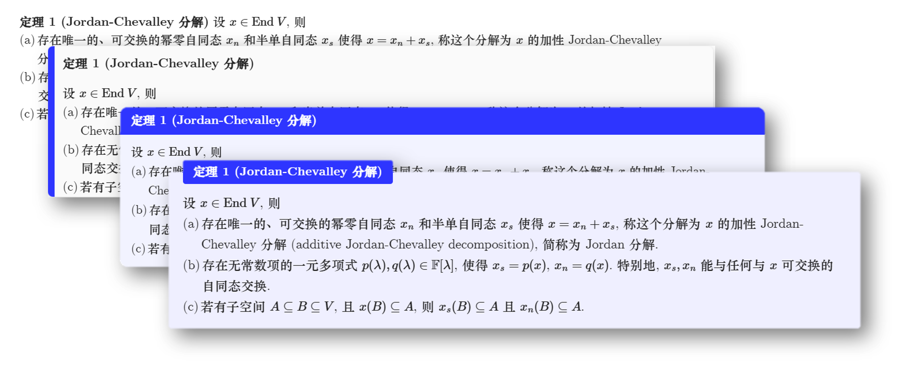
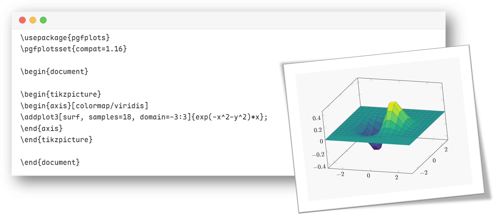
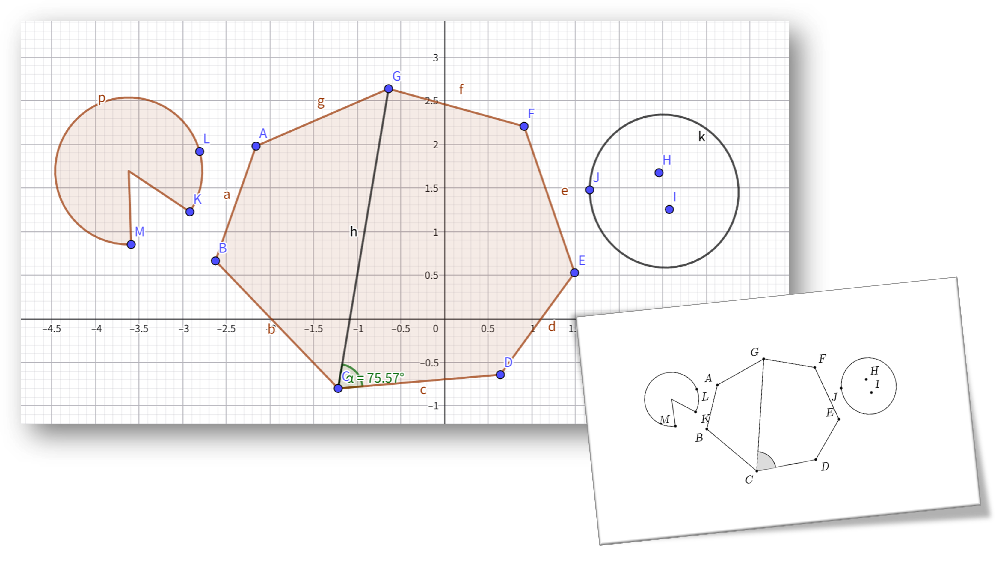
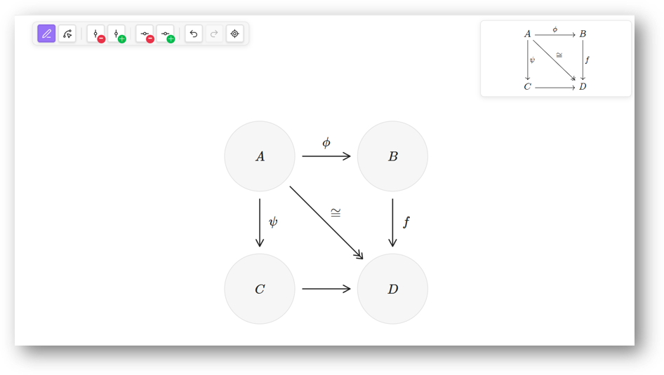

一款为学术写作量身打造的 Obsidian 插件。从定理编号到 TikZ 渲染， 从 GeoGebra 绘图到交换图编辑器，让抽象的数学语言在笔记中绽放。
六大核心能力，重塑 Obsidian 数学笔记体验
支持统一编号、按类型编号、按章节编号三种模式，覆盖 9 种定理类型。搭配 Card、LaTeX、Framed、Plain、Beamer 五种视觉风格和自定义颜色。
一键为 display math 添加 \tag 编号，支持顺序编号和按章节编号。标记模式精细控制哪些公式需要编号。同时支持多级标题自动编号。
在 Obsidian 中直接书写 TikZ 代码，通过 TikZJax 引擎实时渲染为高质量 SVG。内置暗色模式适配、SVG 缓存优化，支持弹出窗口。
自定义 .mcg 文件格式，在 Obsidian 中嵌入 GeoGebra 交互画布。支持一键导出为 TikZ 代码，动态几何与静态排版无缝衔接。
可视化网格编辑器，通过拖拽和键盘快捷键快速构建交换图。自动生成 tikzcd 代码，支持自定义节点和箭头标签。
将内部链接文本中的 LaTeX 公式实时渲染。引用定理自动显示编号与名称，引用公式自动显示标号，支持 Outline 视图数学渲染。
点击选项卡切换不同功能的效果展示
一键编号，五种视觉风格自由切换
在笔记中直接书写并实时预览 TikZ
动态几何导出为出版级矢量图
可视化构建范畴论交换图



